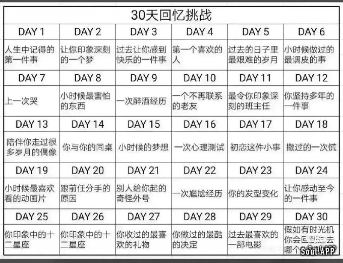

時璃風医詩🍥🌈
@hagishigure
@MeowCatherina 已嚴肅mark。

凯瑟琳奈（赛博咬人黑猫）
@MeowCatherina
D11 我高中班主任，理解和包容我的情况，不责怪我，然后还给我提供了很多帮助
D12 自我成长？我自己是强调成长性的，比如犯了错就改，不犯第二次；然后在自我提升方面，只要我认定这个对我有益我就会去做。
D13 华晨宇
D14 没有给我很深的印象
D15 对不起我真的不记得 https://t.co/uo8qUpqUD1 https://t.co/9So8A3Nt5p